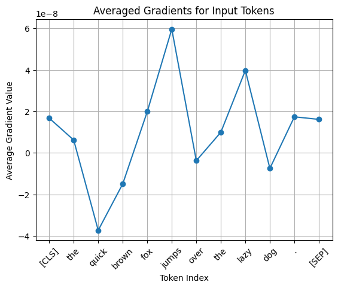
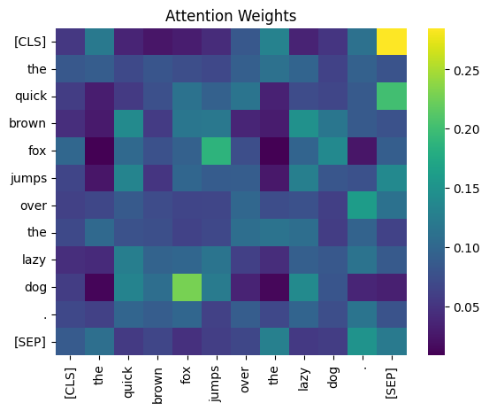
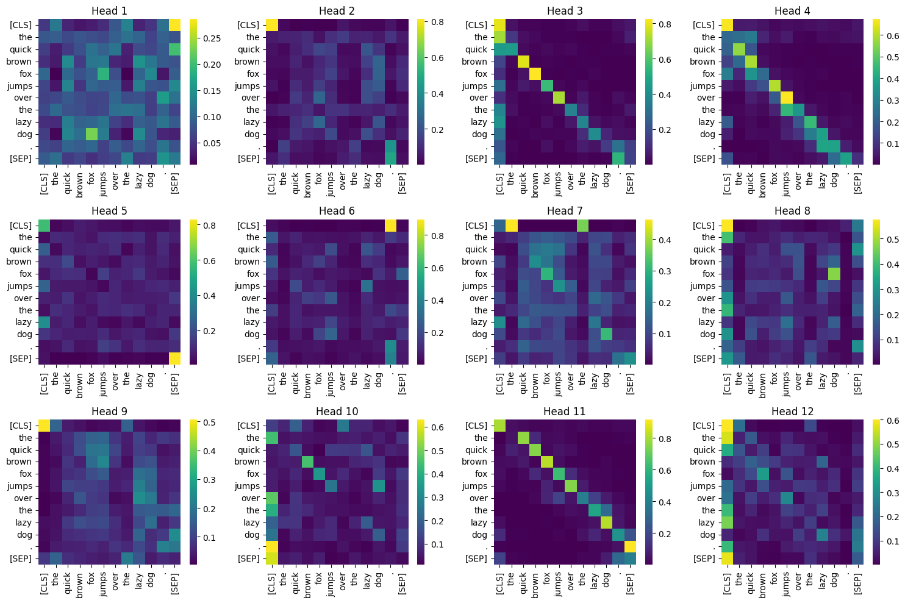

Attention is all you need#
#!pip install transformers
import warnings
warnings.filterwarnings('ignore')
import torch
import matplotlib.pyplot as plt
from transformers import AutoModel, AutoTokenizer
model_name = "bert-base-uncased"
model = AutoModel.from_pretrained(model_name, output_attentions=True)
tokenizer = AutoTokenizer.from_pretrained(model_name)
#inputs = tokenizer("The quick brown fox jumps over the lazy dog.", return_tensors="pt")
inputs = tokenizer("The quick brown fox jumps over the lazy dog.", return_tensors="pt")
embeddings = model.embeddings.word_embeddings(inputs['input_ids'])
embeddings.retain_grad()
outputs = model(inputs_embeds=embeddings)
loss = outputs.last_hidden_state.sum()
loss.backward()
gradients = embeddings.grad
average_gradients = gradients[0].mean(dim=1).detach().numpy()
plt.plot(average_gradients, marker='o')
plt.title("Averaged Gradients for Input Tokens")
plt.xlabel("Token Index")
plt.ylabel("Average Gradient Value")
plt.xticks(ticks=range(len(average_gradients)), labels=tokenizer.convert_ids_to_tokens(inputs['input_ids'][0]), rotation=45)
plt.grid(True)
plt.show()

import seaborn as sns
attention = outputs.attentions
attention_matrix = attention[0][0][0].detach().numpy()
sns.heatmap(attention_matrix, xticklabels=tokenizer.convert_ids_to_tokens(inputs["input_ids"][0]),
yticklabels=tokenizer.convert_ids_to_tokens(inputs["input_ids"][0]), cmap="viridis")
plt.title("Attention Weights")
plt.show()

The attention weights show that the words fox and dog have higher weights than the others, which shows the BERT model paying attention to these words and considering them as the main subject in the sentences.
The Transformers are based on a multi-head mechanism, so we will visualize all 12 heads from the first layer. As a reminder, the BERT structure contains 12 layers with 12 heads in each layer for their multi-head mechanism.
fig, axes = plt.subplots(3, 4, figsize=(15, 10))
for i, ax in enumerate(axes.flat):
sns.heatmap(attention[0][0][i].detach().numpy(), ax=ax, cmap="viridis",
xticklabels=tokenizer.convert_ids_to_tokens(inputs["input_ids"][0]),
yticklabels=tokenizer.convert_ids_to_tokens(inputs["input_ids"][0]))
ax.set_title(f"Head {i+1}")
plt.tight_layout()
plt.show()
